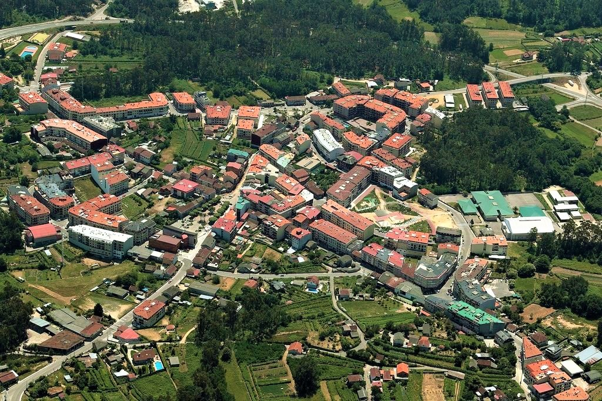

Se ha habilitado un mirador sobre el alto del llamado Coto das Pías, a 168, 2 metros de altura sobre el nivel del mar. Para ello, el 14 de febrero de 2021, se ha instalado en lo más alto de la pequeña montaña un banco y una barandilla metálica sobre un peñasco orientado al este, hacia la salida de sol.
